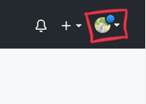
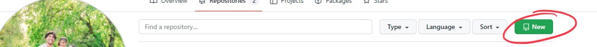
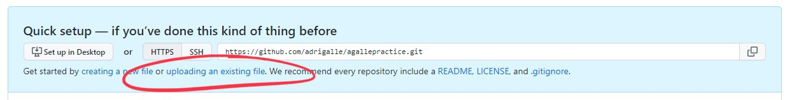
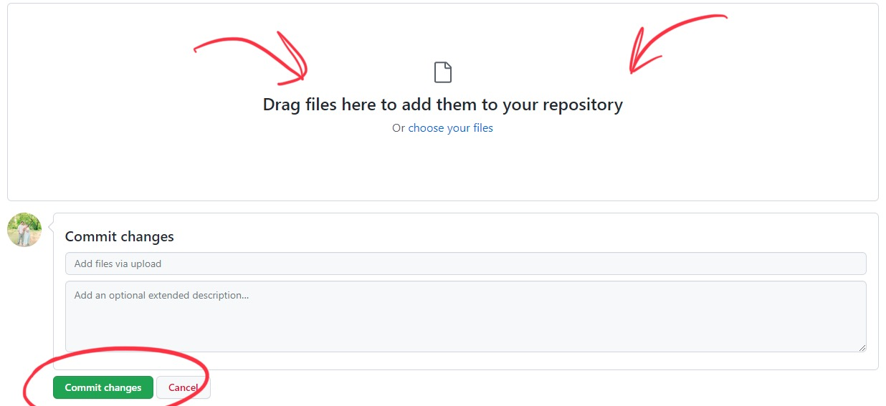

How to Create a Webpage
Step one: Create a GitHub account
Input all your info, and pick a username you think you will like for a long time. Changing this name later on may cause a bunch of issues
Step two: Head to your repositories
Click on the little picture in the top right corner and click on "Your Repositories".

Step three: Create a new repository
Click on the little green "+new" button

Step four: Upload existing files
In the tiny text you will see a link that says upload existing files.

Step five: Commit
For this portion you can just drag and drop. Make sure to include all the files needed to make your file work (like images and stuff). Once that is done, hit commit

Step six: Check your work
Lastly, open up a new tab on your browser and check it out by inputing the name of the repository. It may take a while before it pops up but if you did it all, it should pop up soon